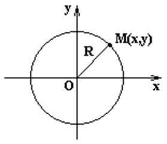
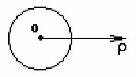
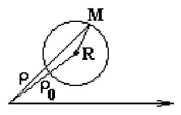
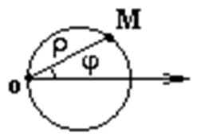

6.2 Окружность
Окружность - геометрическое место точек, равноудаленных
от точки  (центр).
(центр).
(центр).
-
Уравнение окружности
радиуса R с центром в начале координат
– уравнение окружности радиуса
 с центром в начале координат;
с центром в начале координат; -
Уравнение окружности
со смещенным центром относительно начала координат
– с центром в точке
 ;
; -
Параметрическое
уравнение окружности радиуса R со
смещенным центром
– параметрические уравнения
окружности с радиусом и центром в
точке
- Уравнение окружности радиуса R с центром вначале координат – уравнение окружности в полярных координатах с центром в начале координат

- Уравнение окружности со смещенным центром в полярной системе координат – уравнение окружности с центром в точке

-
 Уравнение
окружности с центром в точке (0,R) радиуса R в полярных координатах
– уравнение окружности с
центром в точке и радиусом .
Уравнение
окружности с центром в точке (0,R) радиуса R в полярных координатах
– уравнение окружности с
центром в точке и радиусом .
